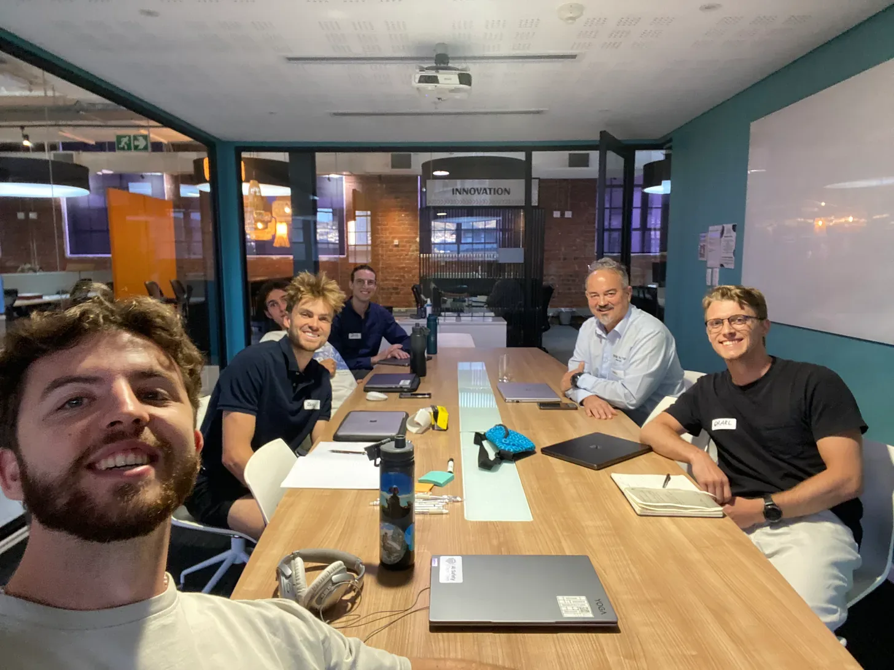
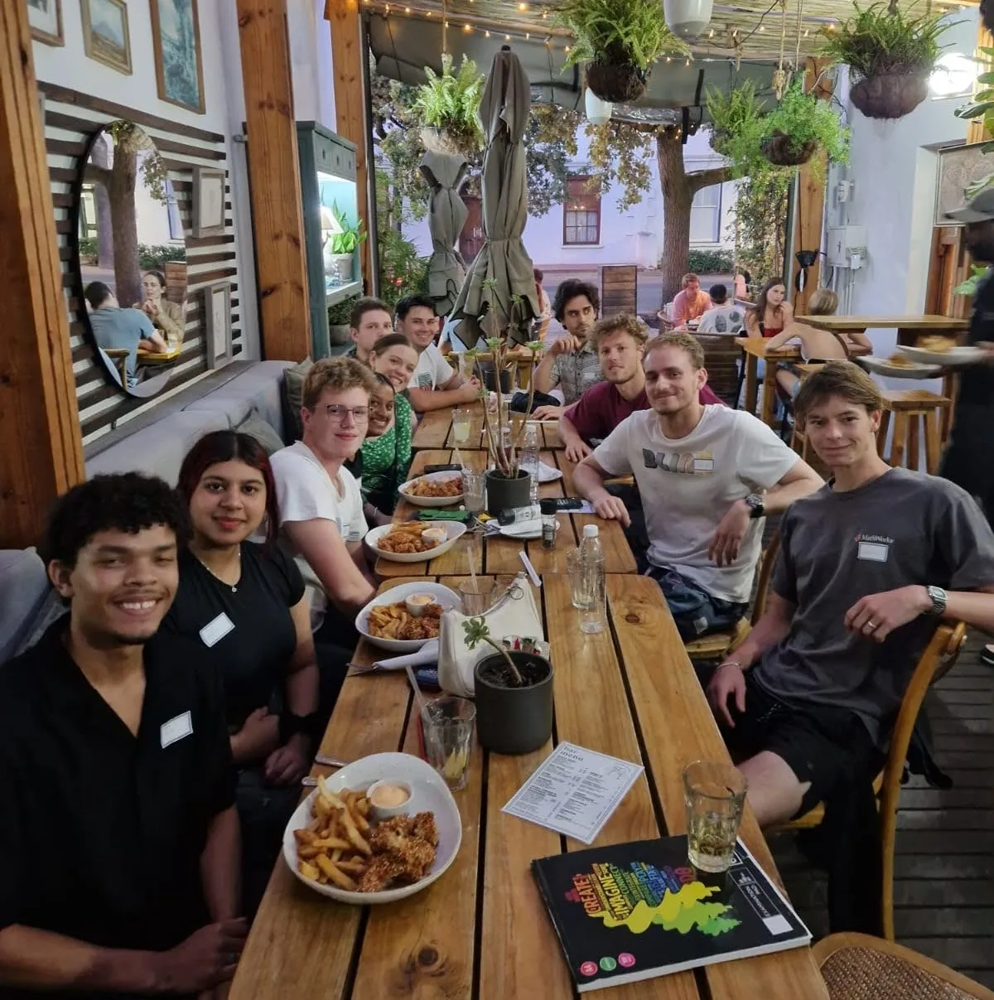

Developing AI safety talent in South Africa.
We have run a broad array of programs that have developed talent in South Africa to respond to AI risk. We have seeded AI safety student groups at top South African universities, run AI safety fundamentals courses, upskilling retreats, and full research fellowships. Participants of these programs have made significant career transitions as a result, joining world-class upskilling programs such as MATS, publishing AI safety research at top AI conferences, or getting jobs at globally relevant AI safety organisations. Through these programs, we have developed a community of exceptional talent and established key partnerships with top local universities and globally relevant AI safety organisations.

Cooperative AI Research Fellowship
A 3-month in-person, all-expense-paid fellowship connecting researchers to senior mentors at Google DeepMind, Oxford, MIT, and more, run in partnership with the Cooperative AI Foundation.
See the program →
AI Safety Fundamentals
Cohort-based courses covering the core technical and governance ideas in AI safety, run regularly for newcomers to the field across Cape Town, Johannesburg, and Pretoria.

University Groups
We seed and support AI safety student groups at leading South African universities, including UCT and Wits, connecting students to research, mentorship, and the broader community.
Research Residencies
We host longer-term residencies at our Cape Town hub. We will be hosting the PIBBSS fellowship from November 2026 to February 2027.
Open Workspace
Our co-working hub in central Cape Town gives established and transitioning professionals in AI safety and d/acc a place to work, at subsidised rates where needed.
Learn more →